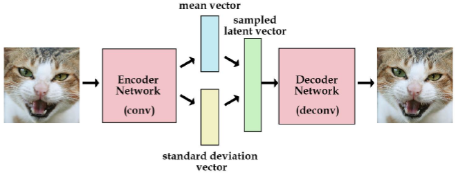
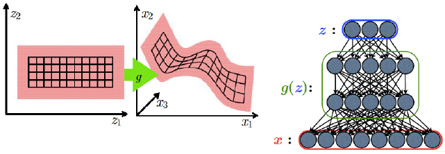
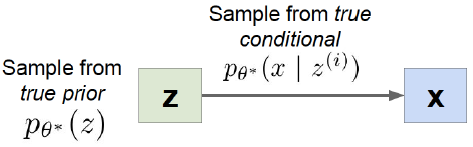
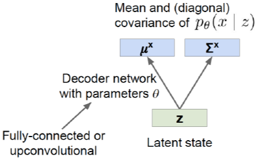
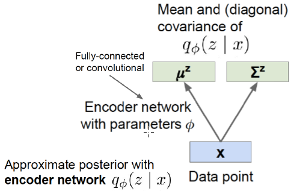
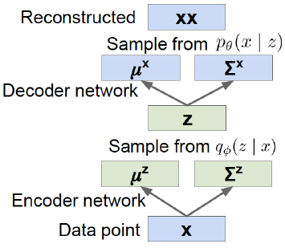
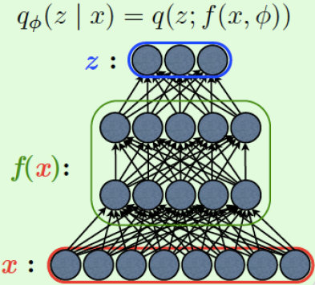
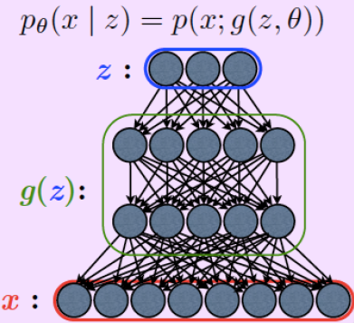
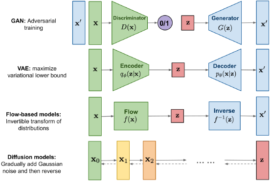

1 Overview of Autoencoders
- Autoencoder neural network: an unsupervised learning algorithm that applies backpropagation, setting target values to be equal to the inputs. ie it uses y^{(i)}=x^{(i)}
- we go from input to bottelneck layer.
- Tried to learn a function h_{w,b}(x)=x
- Learn an approximation to identity function, so as to make output \hat x similar to x
- Decoder need not be a mirror reflection of the encoder.
- If input were completely random—say, each x_i comes from an IID Gaussian independent of the other features—then very difficult
- If there is structure in data, e.g., if some input features are correlated, then this model will be able to discover correlations
- Often ends up learning a low-dimensional representation very similar to PCAs.
- Denoising Auto encoder
- Add the noise in the input and generate the original input, it helps noise to get removed
- Idea: Representation should be robust to introduction of noise:
- Random assignment of subset of inputs to 0, with probability v
- Gaussian additive noise
- Reconstruction: \hat x computed from the corrupted input \hat x
- Loss function compares \hat x reconstruction with the noiseless input \bf X
2 Variational Autoencoder

Given an input, send it to encoder, force the encoder to take it to mean and std vector, (mean 0 std 1)
Now we sample form the unit gaussian, and pass through the decoder, generate the image which looks similar to the original image.
Now due this sampling , we can’t do back prop
Leverage neural network to learn a latent variable model.
p(x)=\int p(x,z)~d z where p(x,z)=p(x\mid z)p(z)
p(z)= something simple, p(x\mid z)=g(z)
Where does z come form? The classic directed model dilemma.
Computing the posterior p(z \mid x) is intractable.
We need it to train the directed model.
A Bayesian spin on an autoencoder!
Assume our data \left\{x^{(i)}\right\}_{i=1}^N is generated like this.

- Intuition: \bf X is an image, \bf z gives class, orientation attributes, etc
- Problem : Estimate \theta without access to latent states!
- Prior: Assume p_\theta(z) is a unit Gaussian.
- Conditional: Assume p_\theta(x \mid z) is a diagonal Gaussian, predict mean and variance with neural net

By Bayes Rules the posterior is:
p_\theta(z\mid x)=\frac{p_\theta(x\mid z)p_\theta(z)}{p_\theta(x)}
- Use decoder network = p_\theta(x\mid z)
- Gaussian = p_\theta(z)
- Intractable integral = p_\theta(x)


- Training like a normal autoencoder:
- Reconstruction loss at the end, regularization toward prior in the middle.
- Mean and (diagonal) covariance of p_\theta(x \mid z)
- Should be close to data x
- Mean and (diagonal) covariance of q_\phi(z \mid x)
- should be close to prior p_\theta(z)
3 Variational Autoencoders : The Math
Maximum Likelihood of dataset \left\{x^{\left(i\right)}\right\}_{i=1}^N
\begin{align*} \theta^{*}&=\arg\operatorname*{max}_{\theta}\prod_{i=1}^{N}p_{\theta}(x^{(i)})\\ &=\arg\operatorname*{max}_{\theta}\sum_{i=1}^{N}\log p_{\theta}(x^{(i)})\\ \end{align*}
Marginalize joint distribution p_{\theta}(x^{(i)})=\int p_{\theta}(x^{(i)},z)d z = \int{p_{\theta}(x^{(i)}\mid z)p_{\theta}(z)d z}
- which is intractible integral
\begin{align*} \mathrm{log}\,p_{\theta}(x^{(i)})&= \mathbf{E}_{z \sim q_{\phi}(z|x^{(i)})}\left[\log p_{\theta}(x^{(i)})\right] \quad (p_{\theta}(x^{i})\text{ does not depend on } z) \\ &= \mathbf{E}_z \left[\log\frac{p_{\theta}(x^{(i)}\mid z)p_{\theta}(z)}{p_{\theta}(z\mid x^{(i)})}\right] \quad \text{ Bayes' Rule }\\ &= \mathbf{E}_z \left[\log\frac{p_{\theta}(x^{(i)}\mid z)p_{\theta}(z)}{p_{\theta}(z\mid x^{(i)})}\frac{q_{\phi}(z\mid x^{(i)})}{q_{\phi}(z\mid x^{(i)})}\right] \text{ Multiply by constant }\\ &= \mathbf{E}_{z}\left[\log p_{\theta}(x^{(i)}\mid z)\right]-\mathbf{E}_{z}\left[\log\frac{q_{\phi}(z\mid x^{(i)})}{p_{\theta}(z)}\right]+\mathbf{E}_{z}\left[\log\frac{q_{\phi}(z\mid x^{(i)})}{p_{\theta}(z\mid x^{(i)})}\right]\\ &= \underbrace{\mathrm{\bf{E}}_{z}\left[\log p_{\theta}(x^{(i)}\mid z)\right]-D_{K L}(q_{\phi}(z\mid x^{(i)})\mid\mid p_{\theta}(z))}_{\mathcal{L}\big(x^{(i)},\theta,\phi\big) \text{ELBOW}} + \underbrace{D_{K L}({q_{\phi}}(z\mid x^{(i)})\mid\mid p_{\theta}(z\mid x^{(i)}))}_{\ge 0} \end{align*}
- Variational lower bound (elbow):
\mathrm{log}\,p_{\theta}(x^{(i)})\ge \mathcal {L}(x^{(i)},\theta,\phi) - Training: Maximize lower bound
\displaystyle {\theta^{*},\phi^{*}}=\arg\operatorname*{max}_{\theta,\phi}\sum_{i=1}^{N}\mathcal{L}(x^{(i)},\theta,\phi) - \log p\theta(x^{(i)}\mid z) : Here we do sampling with reparametrization trick, Reconstruct input data
- D_{K L}(q_{\phi}(z\mid x^{(i)})\mid\mid p_{\theta}(z)) : Latent space should follow prior, Everything is Gaussian closed form solution.
4 Variational Autoencoders: Inference
The VAE approach: introduced an inference model q_\phi(z \mid x) that learns to approximates the intractable posterior p_\theta(z \mid x) by optimizing the variational lower bound: \mathcal{L}(\theta,\phi,x)=-D_{\mathrm{KL}}\left(q_{\phi}(z\mid x)\|\,p_{\theta}(z)\right)+\mathbb{E}_{q_{\phi}(z|x)}\left[\log p_{\theta}(x\mid z)\right]
we parametrize q_\phi(z \mid x) with another neural network:


5 Reparametrization Trick
Problem with respect to the VLB: updating \phi \begin{align*} \mathcal{L}_{\mathrm{VAE}}&=\mathbb{E}_{q_\phi(z|x)}\left[\log\frac{p_{\theta}(z,x)}{q_{\phi}(z|x)}\right]\\ &=-D_{\mathrm{KL}}(q_{\phi}(z|x)||p_{\theta}(z))+\mathbb{E}_{q_{\phi}(z|x)}[\log p_{\theta}(x|z)] \end{align*}
Z{\sim}q_{\phi}{\left(Z|X\right)} : need to differentiate through the sampling process w.r.t \phi (encoder is probablistic)
Let’s consider z to be real and q_{\phi}(z\mid x)=\mathcal {N}(z;\mu_{z}(x),\sigma_{z}(x))
Parametrize z as z=\mu_{z}(x)+\sigma_{z}(x)\epsilon_{z} where \epsilon_{z}={\mathcal{N}}(0,1)
variational inference: A concept where we replace one distribution with another approximation.
What VAE’s can do
- change in the latent space and get the different image, like different pose, or rotation.
- VAE’s have more control on this as compared to GAN
6 KL Divergence between Gaussians
The Kullback Leibler divergence between a Gaussian distribution p with mean \mu_1 and variance \sigma_1^2 and a Gaussian distribution q with mean \mu_2 and variance \sigma_2^2 is given by: \mathrm{KL}(p,q)=\log{\frac{\sigma_{2}}{\sigma_{1}}}+{\frac{\sigma_{1}^{2}+(\mu_{1}-\mu_{2})^{2}}{2\sigma_{2}^{2}}}-{\frac{1}{2}}
7 Training with Backprop
- Due to a reparametrization trick, we can simultaneously train both the generative model p_\theta(x \mid z) and the inference model q_\phi(z \mid x) by optimizing the variational bound using gradient back propagation.
Objective Function: \mathcal{L(\theta,\phi,x)=-D_{\mathrm{KL}}\left(q_{\phi}(z\mid x)||\,p_{\theta}(z)\right)+\mathbb{E}_{q_{\phi}(z|x)}\left[\log p_{\theta}(x\mid z)\right]}

8 Applications of VAEs
- Conditional VAE
- Semi supervised VAEs
- Importance-weighted VAEs
- Recurrent VAEs
- VAE + GAN
- Disentangled VAEs
Recent Developments in Deep Generative Models

- GANs give sharper image, VAEs give blurry image reason is that we sample from a distribution
- So there are a variant where we combine both VAE and GAN
- Disentangled VAEs
- knowing a true generative process is very important which VAEs does
- How to learn VAE so that the Latent space dimension correspond to some semantic.
Following resources were referred in this notes:
\tiny {\textcolor{#808080}{\boxed{\text{Reference: Dr. Vineeth, IIT Hyderabad }}}}